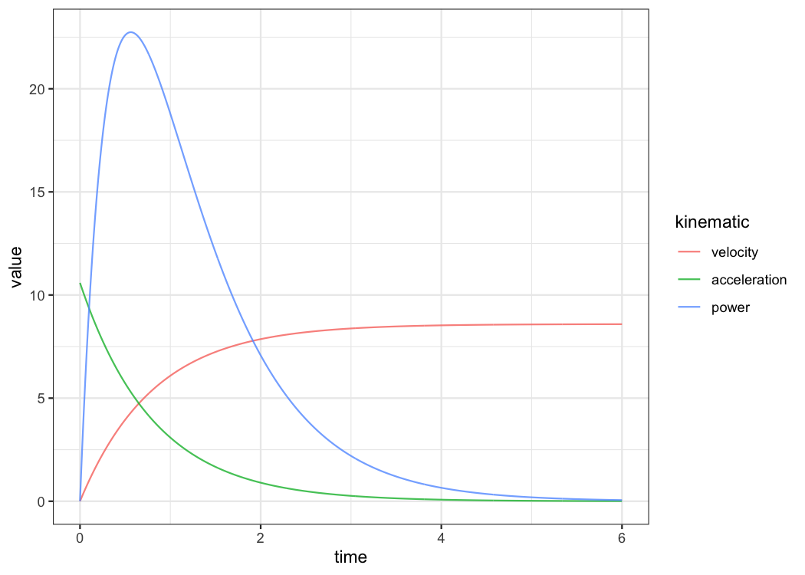
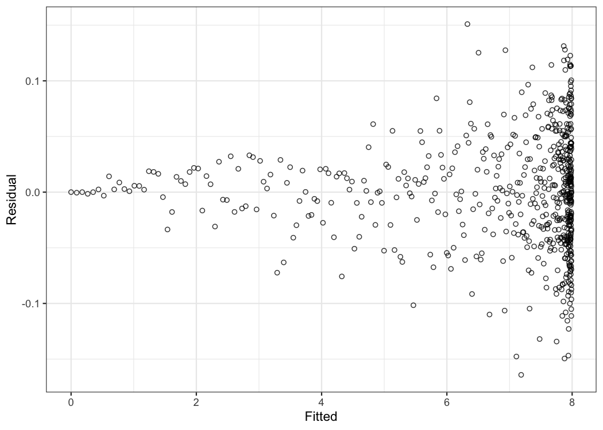

This package creates short sprint (<6sec) profiles using the split times or the radar gun data. Mono-exponential equation is used to estimate maximal sprinting speed (MSS), relative acceleration (TAU), and other parameters. These parameters can be used to predict kinematic and kinetics variables and to compare individuals.
Installation
# Install from CRAN install.packages("shorts") # Or the development version from GitHub # install.packages("devtools") devtools::install_github("mladenjovanovic/shorts")
Examples
shorts comes with two sample data sets: split_times and radar_gun_data with N=5 athletes. Let’s load them both:
Profiling using split times
To model sprint performance using split times, distance will be used as predictor and time as target. Since split_times contains data for multiple athletes, let’s extract only one athlete and model it using shorts::model_using_splits function:
kimberley_data <- filter(split_times, athlete == "Kimberley") kimberley_profile <- shorts::model_using_splits( distance = kimberley_data$distance, time = kimberley_data$time) kimberley_profile #> Estimated model parameters #> -------------------------- #> MSS TAU MAC PMAX #> 8.5911421 0.8113282 10.5889855 22.7428698 #> time_correction distance_correction #> 0.0000000 0.0000000 #> #> Model fit estimators #> -------------------- #> RSE R_squared minErr maxErr maxAbsErr RMSE #> 0.03403413 0.99965531 -0.02699169 0.05293444 0.05293444 0.02778875 #> MAE MAPE #> 0.02333342 1.19263116 summary(kimberley_profile) #> #> Formula: corrected_time ~ TAU * I(LambertW::W(-exp(1)^(-distance/(MSS * #> TAU) - 1))) + distance/MSS + TAU #> #> Parameters: #> Estimate Std. Error t value Pr(>|t|) #> MSS 8.59114 0.12251 70.13 2.48e-07 *** #> TAU 0.81133 0.04581 17.71 5.97e-05 *** #> --- #> Signif. codes: 0 '***' 0.001 '**' 0.01 '*' 0.05 '.' 0.1 ' ' 1 #> #> Residual standard error: 0.03403 on 4 degrees of freedom #> #> Number of iterations to convergence: 4 #> Achieved convergence tolerance: 4.058e-06 coef(kimberley_profile) #> MSS TAU MAC PMAX #> 8.5911421 0.8113282 10.5889855 22.7428698 #> time_correction distance_correction #> 0.0000000 0.0000000
To show used data and predicted outcome (in this case time variable), explore the returned object:
kimberley_profile$data #> distance time weights pred_time #> 1 5 1.158 1 1.210934.... #> 2 10 1.893 1 1.897021.... #> 3 15 2.541 1 2.521028.... #> 4 20 3.149 1 3.122008.... #> 5 30 4.313 1 4.299243.... #> 6 40 5.444 1 5.466324....
shorts::model_using_splits returns an object with parameters, model_fit, model returned from stats::nls function and data used to estimate parameters. Parameters estimated using mono-exponential equation are maximal sprinting speed (MSS), and relative acceleration (TAU). Additional parameters computed from MSS and TAU are maximal acceleration (MAC) and maximal relative power (PMAX).
If you are interested in calculating average split velocity, use shorts::format_splits
shorts::format_splits( distance = kimberley_data$distance, time = kimberley_data$time) #> split split_distance_start split_distance_stop split_distance #> 1 1 0 5 5 #> 2 2 5 10 5 #> 3 3 10 15 5 #> 4 4 15 20 5 #> 5 5 20 30 10 #> 6 6 30 40 10 #> split_time_start split_time_stop split_time split_mean_velocity #> 1 0 1.158 1.158 4.317789.... #> 2 1.158 1.893 0.735 6.802721.... #> 3 1.893 2.541 0.648 7.716049.... #> 4 2.541 3.149 0.608 8.223684.... #> 5 3.149 4.313 1.164 8.591065.... #> 6 4.313 5.444 1.131 8.841732....
Let’s plot observed vs fitted split times. For this we can use data returned from shorts::model_using_splits since it contains pred_time column, but we can also use shorts:predict_ family of functions.
ggplot(kimberley_profile$data, aes(x = distance)) + theme_bw() + geom_point(aes(y = time)) + geom_line(aes(y = pred_time)) + xlab("Distance (m)") + ylab("Time (s)")

To plot predicted velocity, acceleration, and relative power over distance, use shorts:predict_
kimberley_pred <- tibble( distance = seq(0, 40, length.out = 1000), # Velocity pred_velocity = shorts::predict_velocity_at_distance( distance, kimberley_profile$parameters$MSS, kimberley_profile$parameters$TAU), # Acceleration pred_acceleration = shorts::predict_acceleration_at_distance( distance, kimberley_profile$parameters$MSS, kimberley_profile$parameters$TAU), # Power pred_power = shorts::predict_relative_power_at_distance( distance, kimberley_profile$parameters$MSS, kimberley_profile$parameters$TAU), ) # Convert to long kimberley_pred <- gather(kimberley_pred, "metric", "value", -distance) ggplot(kimberley_pred, aes(x = distance, y = value)) + theme_bw() + geom_line() + facet_wrap(~metric, scales = "free_y") + xlab("Distance (m)") + ylab(NULL)

To do prediction simpler, use predict function. This will provide kinematics for 0-6s sprint using 100Hz.
predicted_kinematics <- predict(kimberley_profile) head(predicted_kinematics) #> time distance velocity acceleration power #> 1 0.00 0.0000000000 0.0000000 10.588986 0.000000 #> 2 0.01 0.0005272807 0.1052400 10.459272 1.100733 #> 3 0.02 0.0021005019 0.2091907 10.331148 2.161181 #> 4 0.03 0.0047068510 0.3118682 10.204593 3.182488 #> 5 0.04 0.0083336724 0.4132878 10.079589 4.165771 #> 6 0.05 0.0129684654 0.5134650 9.956116 5.112117
To get model residuals, use residuals function:
residuals(kimberley_profile) #> [1] 0.052934436 0.004021074 -0.019971823 -0.026991691 -0.013756850 #> [6] 0.022324628
Package shorts comes with find_ family of functions that allow finding peak power and it’s location, as well as critical distance over which velocity, acceleration, or power drops below certain threshold:
# Peak power and location shorts::find_max_power_distance( kimberley_profile$parameters$MSS, kimberley_profile$parameters$TAU ) #> $max_power #> [1] 22.74287 #> #> $distance #> [1] 1.346271 # Distance over which power is over 50% shorts::find_power_critical_distance( MSS = kimberley_profile$parameters$MSS, TAU = kimberley_profile$parameters$TAU, percent = 0.5 ) #> $lower #> [1] 0.08295615 #> #> $upper #> [1] 7.441024 # Distance over which acceleration is under 50% shorts::find_acceleration_critical_distance( MSS = kimberley_profile$parameters$MSS, TAU = kimberley_profile$parameters$TAU, percent = 0.5 ) #> [1] 1.346279 # Distance over which velocity is over 95% shorts::find_velocity_critical_distance( MSS = kimberley_profile$parameters$MSS, TAU = kimberley_profile$parameters$TAU, percent = 0.95 ) #> [1] 14.25922
Mixed-effect models
Each individual can be modeled separately, or we can perform non-linear mixed model using nlme function from nlme package (Pinheiro et al., 2019). This is done using shorts::mixed_model_using_splits:
mixed_model <- shorts::mixed_model_using_splits( data = split_times, distance = "distance", time = "time", athlete = "athlete" ) mixed_model #> Estimated fixed model parameters #> -------------------------------- #> MSS TAU MAC PMAX #> 8.0649112 0.6551988 12.3091052 24.8179600 #> time_correction distance_correction #> 0.0000000 0.0000000 #> #> Estimated frandom model parameters #> ---------------------------------- #> athlete MSS TAU MAC PMAX time_correction #> 1 James 9.691736 0.8469741 11.44278 27.72510 0 #> 2 Jim 7.833622 0.5048535 15.51663 30.38785 0 #> 3 John 7.780395 0.7274302 10.69573 20.80424 0 #> 4 Kimberley 8.569518 0.8022235 10.68221 22.88535 0 #> 5 Samantha 6.449284 0.3945129 16.34746 26.35735 0 #> distance_correction #> 1 0 #> 2 0 #> 3 0 #> 4 0 #> 5 0 #> #> Model fit estimators #> -------------------- #> RSE R_squared minErr maxErr maxAbsErr RMSE #> 0.02600213 0.99982036 -0.02934519 0.04964582 0.04964582 0.02139178 #> MAE MAPE #> 0.01722581 0.90185579 summary(mixed_model) #> Nonlinear mixed-effects model fit by maximum likelihood #> Model: corrected_time ~ TAU * I(LambertW::W(-exp(1)^(-distance/(MSS * TAU) - 1))) + distance/MSS + TAU #> Data: df #> AIC BIC logLik #> -75.06719 -66.66001 43.5336 #> #> Random effects: #> Formula: list(MSS ~ 1, TAU ~ 1) #> Level: athlete #> Structure: General positive-definite, Log-Cholesky parametrization #> StdDev Corr #> MSS 1.06581655 MSS #> TAU 0.17821114 0.877 #> Residual 0.02600213 #> #> Fixed effects: MSS + TAU ~ 1 #> Value Std.Error DF t-value p-value #> MSS 8.064911 0.4949104 24 16.295699 0 #> TAU 0.655199 0.0837593 24 7.822404 0 #> Correlation: #> MSS #> TAU 0.874 #> #> Standardized Within-Group Residuals: #> Min Q1 Med Q3 Max #> -1.9092981 -0.6050683 0.1536529 0.5226467 1.1285687 #> #> Number of Observations: 30 #> Number of Groups: 5
shorts::mixed_model_using_splits return the similar object, but parameters contain two elements: fixed and random.
Let’s plot predicted velocity over distance for athletes in the split_times data set:
velocity_over_distance <- merge( mixed_model$parameters$random, data.frame(distance = seq(0, 40, length.out = 1000)) ) velocity_over_distance$pred_velocity <- with(velocity_over_distance, shorts::predict_velocity_at_distance( distance = distance, MSS = MSS, TAU = TAU) ) ggplot(velocity_over_distance, aes(x = distance, y = pred_velocity, color = athlete)) + theme_bw() + geom_line() + xlab("Distance (m)") + ylab("Predicted velocity (m/s)")

Profiling using radar gun data
The radar gun data is modeled using measured velocity as target variable and time as predictor. Individual analysis is performed using shorts::model_using_radar function. Let’s do analysis for Jim:
jim_data <- filter(radar_gun_data, athlete == "Jim") jim_profile <- shorts::model_using_radar( time = jim_data$time, velocity = jim_data$velocity ) jim_profile #> Estimated model parameters #> -------------------------- #> MSS TAU MAC PMAX #> 7.9979331 0.8886595 8.9999977 17.9953449 #> time_correction distance_correction #> 0.0000000 0.0000000 #> #> Model fit estimators #> -------------------- #> RSE R_squared minErr maxErr maxAbsErr RMSE #> 0.05058726 0.99924408 -0.15099212 0.16415830 0.16415830 0.05050288 #> MAE MAPE #> 0.03927901 NaN summary(jim_profile) #> #> Formula: velocity ~ MSS * (1 - exp(1)^(-(corrected_time)/TAU)) #> #> Parameters: #> Estimate Std. Error t value Pr(>|t|) #> MSS 7.997933 0.003069 2606.3 <2e-16 *** #> TAU 0.888659 0.001564 568.2 <2e-16 *** #> --- #> Signif. codes: 0 '***' 0.001 '**' 0.01 '*' 0.05 '.' 0.1 ' ' 1 #> #> Residual standard error: 0.05059 on 598 degrees of freedom #> #> Number of iterations to convergence: 3 #> Achieved convergence tolerance: 9.313e-07
The object returned from shorts::model_using_radar is same as object returned from shorts::model_using_splits. Let’s plot Jim’s measured velocity and predicted velocity:
ggplot(jim_profile$data, aes(x = time)) + theme_bw() + geom_line(aes(y = velocity), alpha = 0.5) + geom_line(aes(y = pred_velocity), color = "red", alpha = 0.5) + xlab("Time (s)") + ylab("Velocity (m/s)")

Radar gun data can be modeled individually or using non-linear mixed model implemented in shorts::mixed_model_using_radar:
mixed_model <- shorts::mixed_model_using_radar( data = radar_gun_data, time = "time", velocity = "velocity", athlete = "athlete" ) mixed_model #> Estimated fixed model parameters #> -------------------------------- #> MSS TAU MAC PMAX #> 8.301178 1.007782 8.237080 17.094367 #> time_correction distance_correction #> 0.000000 0.000000 #> #> Estimated frandom model parameters #> ---------------------------------- #> athlete MSS TAU MAC PMAX time_correction #> 1 James 9.998556 1.1108457 9.000851 22.49888 0 #> 2 Jim 7.997945 0.8886712 8.999892 17.99516 0 #> 3 John 8.000051 1.0690357 7.483427 14.96695 0 #> 4 Kimberley 9.005500 1.2855706 7.005061 15.77102 0 #> 5 Samantha 6.503839 0.6847851 9.497635 15.44277 0 #> distance_correction #> 1 0 #> 2 0 #> 3 0 #> 4 0 #> 5 0 #> #> Model fit estimators #> -------------------- #> RSE R_squared minErr maxErr maxAbsErr RMSE #> 0.05164818 0.99942171 -0.21912952 0.19832897 0.21912952 0.05156203 #> MAE MAPE #> 0.03949473 NaN summary(mixed_model) #> Nonlinear mixed-effects model fit by maximum likelihood #> Model: velocity ~ MSS * (1 - exp(1)^(-(corrected_time)/TAU)) #> Data: df #> AIC BIC logLik #> -9150.177 -9114.139 4581.089 #> #> Random effects: #> Formula: list(MSS ~ 1, TAU ~ 1) #> Level: athlete #> Structure: General positive-definite, Log-Cholesky parametrization #> StdDev Corr #> MSS 1.16535852 MSS #> TAU 0.20497379 0.811 #> Residual 0.05164818 #> #> Fixed effects: MSS + TAU ~ 1 #> Value Std.Error DF t-value p-value #> MSS 8.301178 0.5213403 2994 15.92276 0 #> TAU 1.007782 0.0917011 2994 10.98986 0 #> Correlation: #> MSS #> TAU 0.811 #> #> Standardized Within-Group Residuals: #> Min Q1 Med Q3 Max #> -3.8399995748 -0.5932967650 -0.0002562518 0.6111624765 4.2427350284 #> #> Number of Observations: 3000 #> Number of Groups: 5
Let’s plot predicted acceleration over time (0-6sec) for athletes in the radar_gun_data data set:
model_predictions <- predict(mixed_model) ggplot(model_predictions, aes(x = time, y = acceleration, color = athlete)) + theme_bw() + geom_line() + xlab("Time (s)") + ylab("Predicted acceleration (m/s^2)")

Using corrections
You have probably noticed that estimated MSS and TAU were a bit too high for splits data. Biased estimates are due to differences in starting positions and timing triggering methods for certain measurement approaches (e.g. starting behind first timing gate, or allowing for body rocking). This topic is further explained in sprint-corrections vignette that can be accessed by typing:
vignette("sprint-corrections")
Here I will provide quick summary. Often, this bias in estimates is dealt with by using heuristic rule of thumb of adding time_correction to split times (e.g. from 0.3-0.5sec; see more in Haugen et al., 2012). This functionality is available in all covered shorts functions:
mixed_model_corrected <- shorts::mixed_model_using_splits( data = split_times, distance = "distance", time = "time", athlete = "athlete", time_correction = 0.3 ) mixed_model_corrected #> Estimated fixed model parameters #> -------------------------------- #> MSS TAU MAC PMAX #> 8.474621 1.154940 7.337715 15.546088 #> time_correction distance_correction #> 0.300000 0.000000 #> #> Estimated frandom model parameters #> ---------------------------------- #> athlete MSS TAU MAC PMAX time_correction #> 1 James 10.549314 1.4953619 7.054689 18.60553 0.3 #> 2 Jim 8.048378 0.9216038 8.733012 17.57165 0.3 #> 3 John 8.130968 1.2295728 6.612839 13.44220 0.3 #> 4 Kimberley 9.114979 1.3721302 6.642940 15.13756 0.3 #> 5 Samantha 6.529465 0.7560310 8.636504 14.09794 0.3 #> distance_correction #> 1 0 #> 2 0 #> 3 0 #> 4 0 #> 5 0 #> #> Model fit estimators #> -------------------- #> RSE R_squared minErr maxErr maxAbsErr RMSE #> 0.015195052 0.999941466 -0.041155421 0.020298042 0.041155421 0.012443740 #> MAE MAPE #> 0.009087699 0.496822694 summary(mixed_model_corrected) #> Nonlinear mixed-effects model fit by maximum likelihood #> Model: corrected_time ~ TAU * I(LambertW::W(-exp(1)^(-distance/(MSS * TAU) - 1))) + distance/MSS + TAU #> Data: df #> AIC BIC logLik #> -96.92355 -88.51636 54.46177 #> #> Random effects: #> Formula: list(MSS ~ 1, TAU ~ 1) #> Level: athlete #> Structure: General positive-definite, Log-Cholesky parametrization #> StdDev Corr #> MSS 1.32853982 MSS #> TAU 0.27791928 0.924 #> Residual 0.01519505 #> #> Fixed effects: MSS + TAU ~ 1 #> Value Std.Error DF t-value p-value #> MSS 8.474621 0.6159646 24 13.758292 0 #> TAU 1.154940 0.1293310 24 8.930112 0 #> Correlation: #> MSS #> TAU 0.923 #> #> Standardized Within-Group Residuals: #> Min Q1 Med Q3 Max #> -1.3358323 -0.4066588 -0.1325837 0.3284514 2.7084751 #> #> Number of Observations: 30 #> Number of Groups: 5
And time_correction can also be used in predict_ and find_ family of functions:
velocity_over_distance_corrected <- merge( mixed_model_corrected$parameters$random, data.frame(distance = seq(0, 40, length.out = 1000)) ) velocity_over_distance_corrected$pred_velocity <- with(velocity_over_distance, shorts::predict_velocity_at_distance( distance = distance, MSS = MSS, TAU = TAU, time_correction = 0.3) ) ggplot(velocity_over_distance_corrected, aes(x = distance, y = pred_velocity, color = athlete)) + theme_bw() + geom_line() + xlab("Distance (m)") + ylab("Predicted velocity (m/s)")

Instead of providing for time_correction, this parameter can be estimated using shorts::model_using_splits_with_time_correction and shorts::mixed_model_using_splits_with_time_correction:
kimberley_profile_with_time_correction <- shorts::model_using_splits_with_time_correction( distance = kimberley_data$distance, time = kimberley_data$time) kimberley_profile_with_time_correction #> Estimated model parameters #> -------------------------- #> MSS TAU MAC PMAX #> 8.9748353 1.2348565 7.2679175 16.3070907 #> time_correction distance_correction #> 0.2346537 0.0000000 #> #> Model fit estimators #> -------------------- #> RSE R_squared minErr maxErr maxAbsErr #> 0.0011290466 0.9999996942 -0.0012094658 0.0011807342 0.0012094658 #> RMSE MAE MAPE #> 0.0007983565 0.0006586035 0.0282352643 # Mixed-effect model using `time_correction` as fixed effect only # To use `time_correction` as random effects, use corrections_as_random_effects = TRUE mixed_model_with_time_correction <- shorts::mixed_model_using_splits_with_time_correction( data = split_times, distance = "distance", time = "time", athlete = "athlete", corrections_as_random_effects = FALSE ) # Parameters mixed_model_with_time_correction #> Estimated fixed model parameters #> -------------------------------- #> MSS TAU MAC PMAX #> 8.3040140 0.9687348 8.5720197 17.7955429 #> time_correction distance_correction #> 0.1989677 0.0000000 #> #> Estimated frandom model parameters #> ---------------------------------- #> MSS TAU MAC PMAX time_correction distance_correction #> 1 10.186327 1.2429367 8.195370 20.87018 0.1989677 0 #> 2 7.946099 0.7643674 10.395655 20.65123 0.1989677 0 #> 3 7.996262 1.0488272 7.624003 15.24088 0.1989677 0 #> 4 8.899472 1.1615147 7.661953 17.04683 0.1989677 0 #> 5 6.491911 0.6260282 10.369998 16.83028 0.1989677 0 #> #> Model fit estimators #> -------------------- #> RSE R_squared minErr maxErr maxAbsErr RMSE #> 0.005976815 0.999990286 -0.016508275 0.009370607 0.016508275 0.004882226 #> MAE MAPE #> 0.003481096 0.186135567
For more details, please refer to sprint-corrections vignette.
Citation
To cite shorts, please use the following command to get the BibTex entry:
citation("shorts")
References
Please refer to these publications for more information on short sprints modeling using mono-exponential equation, as well as on performing mixed non-linear models with nlme package:
Chelly SM, Denis C. 2001. Leg power and hopping stiffness: relationship with sprint running performance: Medicine and Science in Sports and Exercise:326–333. DOI: 10.1097/00005768-200102000-00024.
Clark KP, Rieger RH, Bruno RF, Stearne DJ. 2017. The NFL Combine 40-Yard Dash: How Important is Maximum Velocity? Journal of Strength and Conditioning Research:1. DOI: 10.1519/JSC.0000000000002081.
Furusawa K, Hill AV, and Parkinson JL. The dynamics of" sprint" running. Proceedings of the Royal Society of London. Series B, Containing Papers of a Biological Character 102 (713): 29-42, 1927
Greene PR. 1986. Predicting sprint dynamics from maximum-velocity measurements. Mathematical Biosciences 80:1–18. DOI: 10.1016/0025-5564(86)90063-5.
Haugen TA, Tønnessen E, Seiler SK. 2012. The Difference Is in the Start: Impact of Timing and Start Procedure on Sprint Running Performance: Journal of Strength and Conditioning Research 26:473–479. DOI: 10.1519/JSC.0b013e318226030b.
Pinheiro J, Bates D, DebRoy S, Sarkar D, R Core Team. 2019. nlme: Linear and nonlinear mixed effects models.
Samozino P. 2018. A Simple Method for Measuring Force, Velocity and Power Capabilities and Mechanical Effectiveness During Sprint Running. In: Morin J-B, Samozino P eds. Biomechanics of Training and Testing. Cham: Springer International Publishing, 237–267. DOI: 10.1007/978-3-319-05633-3_11.